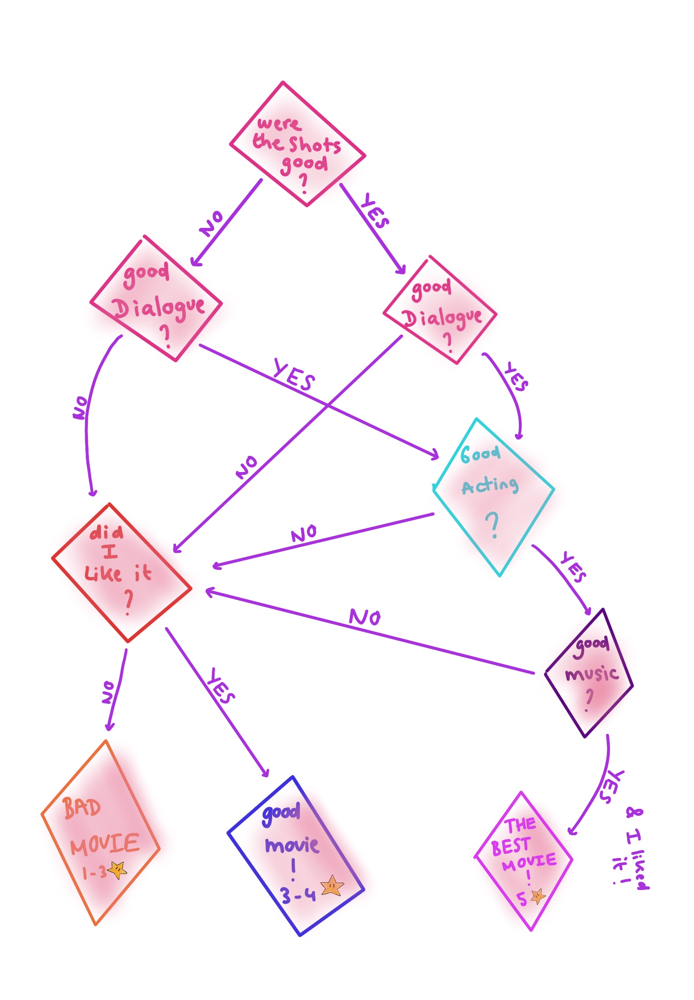

I really like movies.
A few years ago while I was still at school, one of my closest friends got me into watching movies. It is hard to explain but he got me to not only watch movies but look further into them.
Looking further into a movie means embracing the cinematography, the dialogue and the overall beauty of a film. It means looking at resemblance to other movies and how this movie is different to any movie I have ever seen before. It also means focusing on the movie, not being on my phone, and once the movie is done: think about the movie you have just watched and make up a critic.
Making up a critic to a movie goes like this: (checklist !)
Since I haven’t studied anything related to movies or arts in general, I rate a movie under my own criteria. First of all, were the shots good ? Was the movie beautiful visually ? That’s not enough though, a nice looking movie can be boring. I can’t think of an example. Then how was the dialogue and what about the actors, how did they deliver their lines ? The best movie ever delivered by a bad actor is directly a 2 star movie. Finally what makes a good movie great is the music. Interstellar: great fucking music. Lalaland: great fucking music, Soul: greattttt music.
I just really love watching movies and it has become a big part of my personality. I think my life and actions are partly inspired by the movies I have watched and the rest of my life will be written by the new movies I will see. I would like to thank this friend, who doesn’t know how deeply he has changed my life. He has burst a flame in me, a true passion.
Go to the blog